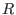
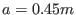
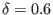

Next: Safety factor Up: Axisymmetric magnetic field Previous: Closed magnetic surfaces in
This section introduces parameters that characteristic the shape of the
projection of a magnetic surface on the poloidal plane. The ``midplane'' is
defined as the plane that passes through the magnetic axis and is
perpendicular to the symmetric axis ( axis). For a up-down symmetric (about
the midplane) magnetic surface, its shape can be roughly characterized by four
parameters, namely, the  coordinate of the innermost and outermost points
on the midplane,
and
; the  coordinators of the highest point of the magnetic surface,
. These four parameters are indicated in Fig. 4.
coordinators of the highest point of the magnetic surface,
. These four parameters are indicated in Fig. 4.
In terms of these four parameters, we can define the major radius of a magnetic surface
The four shape parameters for the typical Last-Closed-Flux-Surface (LCFS) of
EAST tokamak are: major radius
(can reach ), minor
radius
, ellipticity
(can be in the range from 1.7
to 1.9), triangularity
 (can be in the range from 0.5 to 0.7).
Note that the major radius  of the LCFS is usually different from
(the coordinate of the magnetic axis). Usually we have
due to the Shafranov shift.
of the LCFS is usually different from
(the coordinate of the magnetic axis). Usually we have
due to the Shafranov shift.
yj 2018-03-09